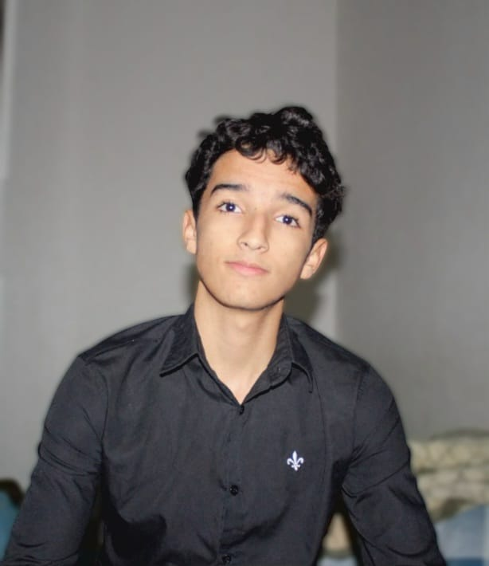
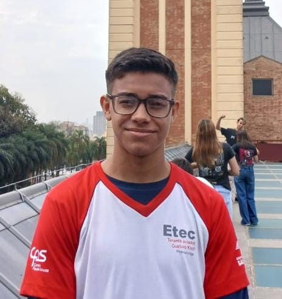
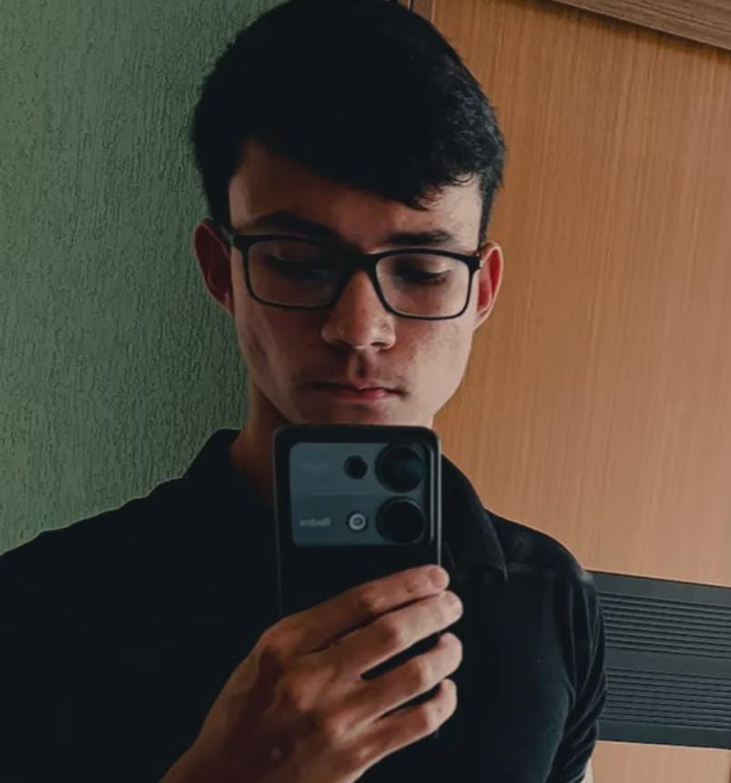

Quem somos?
Somos alunos do 2º ano do ensino médio integrado ao curso técnico de desenvolvimento de sistemas. Estudamos na ETEC Tenente Aviador Gustavo Klug, da cidade de Pirassununga do estado de São Paulo.
Como desenvolvemos essa plataforma?
Cada um de nós ficamos responsáveis por uma parte do projeto. A responsabilidade de cada integrante foi dividida com base na habilidade de cada um em determinada área.

Arthur Henrique Assis dos Santos
Foi responsável por toda a programação mobile, além de ter idealizado a base da plataforma.

Hector de Oliveira Francisco
Foi responsável pela programação da skill e integração da Alexa com nossos servidores.

Pedro Rodrigues Staiger
Foi responsável por toda programação web (website, servidor e base de dados).